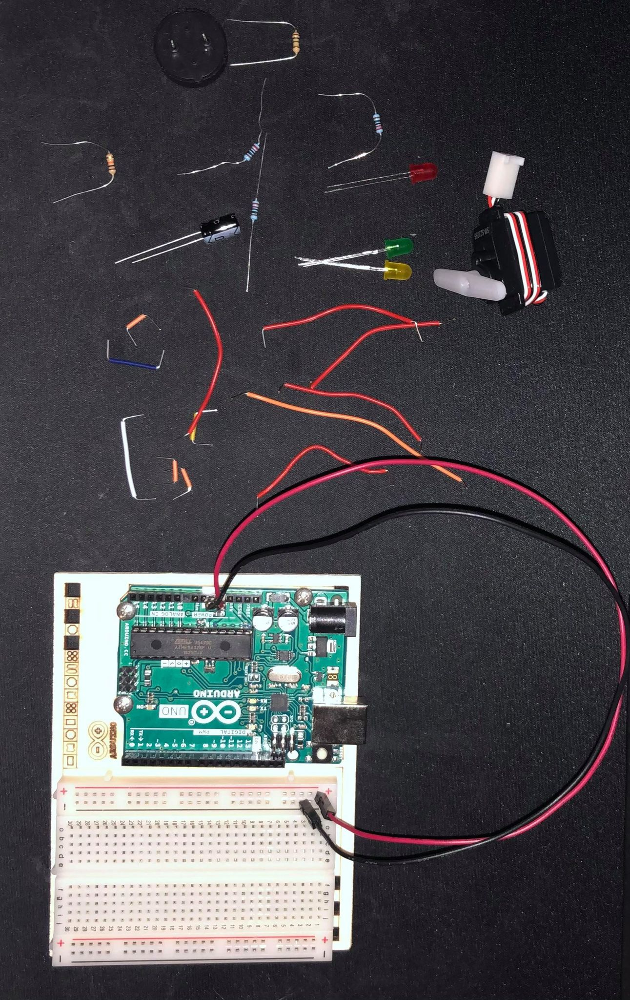
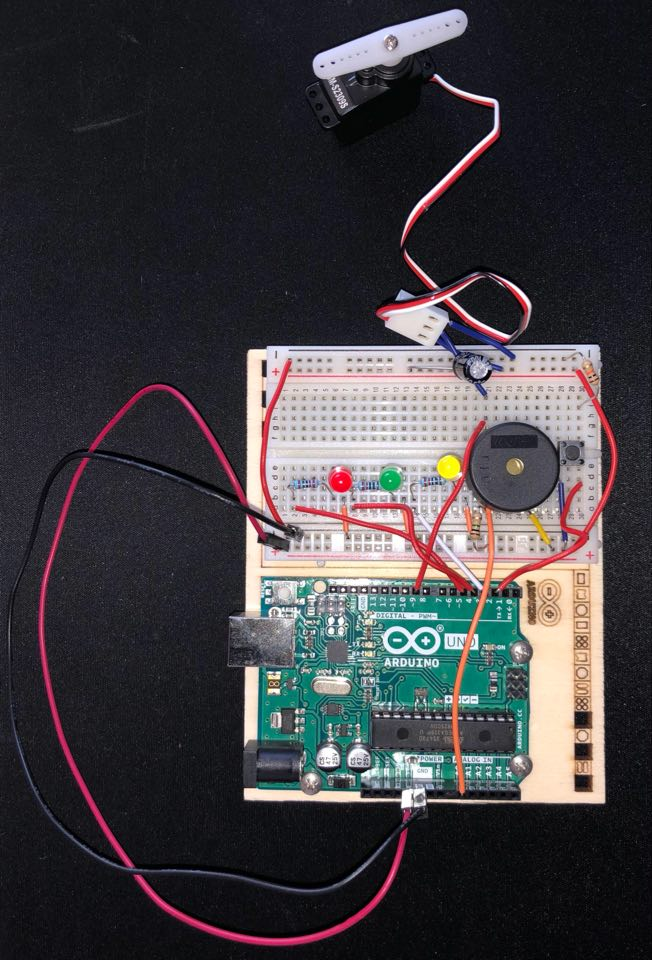
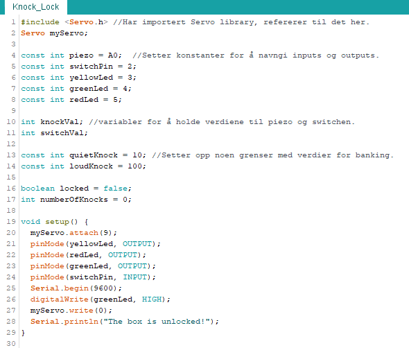
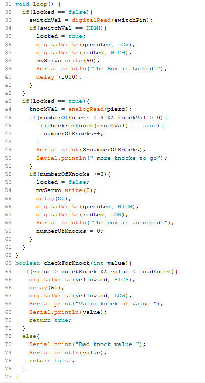
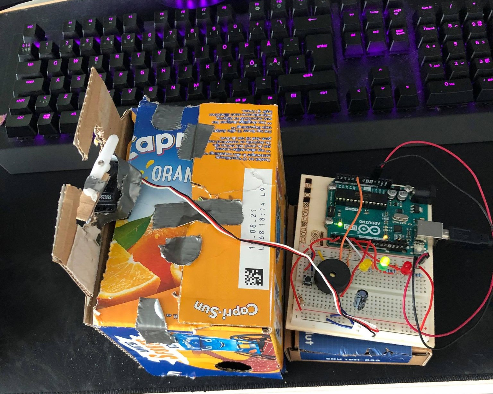
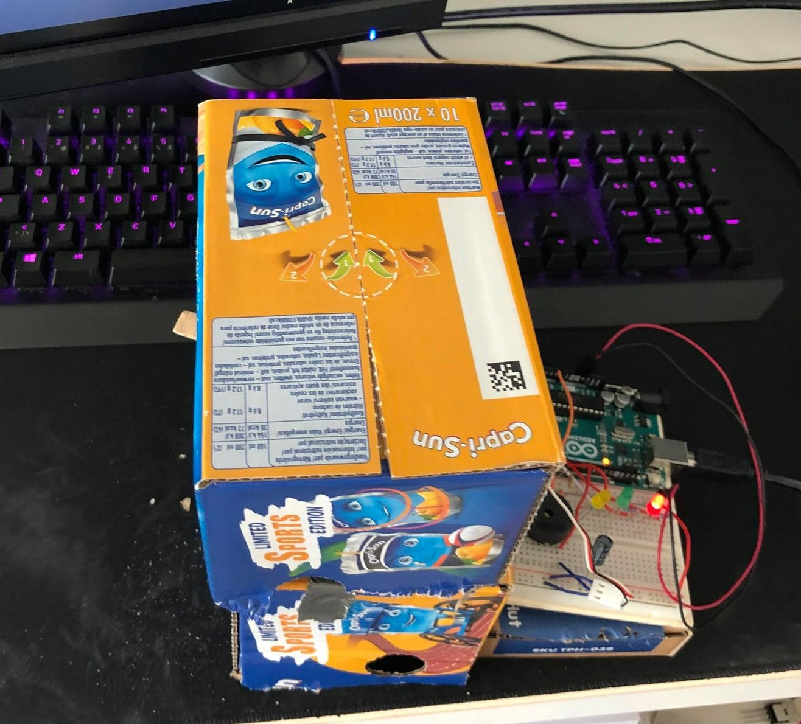

Prosjekt 3 - Elektronikk og Arduino
Mitt tredje prosjekt i dette emnet er et prosjekt med Arduino. Oppgaven for dette temaet i emnet var å bli kjent med Arduino systemet, og å levere enten ett egenutviklet prosjekt eller et fra prosjektboken som følger med Arduino-kittet. Ettersom jeg ikke hadde noe erfaring med Arduino fra før har jeg valgt å gjennomføre et fra prosjektboken. Dette er da prosjektet jeg gikk for:
Knock Lock
Knock Lock er et prosjekt fra prosjektboken som går ut på at man bruker en servo motor til å lokke opp en "boks". Enkelt forklart så bruker man en piezo til å fange opp vibrasjon, eller bank, som igjen utløser mekanismen som låser opp boksen. Under har jeg lagt noen bilder som viser oppbyggingen og en video som viser hvordan dette fungerer i praksis.
Utstyret som ble brukt for dette prosjektet
Hva jeg brukte:
- Arduino
- breadboard
- 1 x 10 kilohm resistor
- 3 x 220 ohm resistor
- 1 x 1 megaohm resistor
- 1 x 100uF capacitor
- 1 knapp
- 3 x ledlys av forskjellig farge
- 1 X Servo motor
- 1 x piezo
- Mange ledninger
Ferdig koblet Arduino og breadboard
Etter å ha koblet ferdig Ardunioen og breadboardet skrev jeg koden på pcen.
Koden
 Arduinoen i praksis
Under har jeg lagt en video som viser servo motoren som først lukker seg ved trykk på knappen. Deretter åpner den seg etter tre godkjente bank. Jeg har satt hva som er et godkjent bank i koden over (mellom 10-100).
Eksempel med boks
Under har jeg lagt til et eksempel som jeg lagde. Dette eksempelet viser hvordan prosjektet kan brukes.
Oppsettet
Jeg lagde en "boks" av en capri sonne eske, og festet servomotoren bak. Under er det lagt bilder av hvordan oppsettet er først åpnet, og så lukket.
 Hvordan det fungerer i praksis
Så lagde jeg en video av hvordan dette fungerer i praksis, hvor jeg først "låser" boksen, før å så banke til jeg har oppnådd tre godkjente bank.